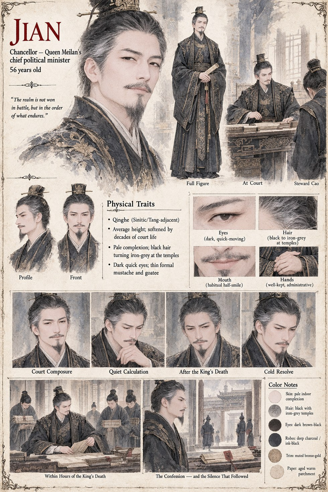

Jian
Chancellor · Queen Meilan's Chief Political Minister · 56 years old
Chancellor and chief political minister to Queen Meilan, and the one man in Jinlu who understands that a realm is not won in battle so much as in the order of what endures afterward. He has Cao executed within hours of the steward's confession under Duan's questioning, less to punish the poisoning than to close, permanently, the question of who else knew — and spends the months after building the account that recasts Mingxuan's own investigation as the real conspiracy.
He asks Meilan for more authority than a chancellor has ever formally held, not long after the Concord is signed, and dies of a sudden illness shortly afterward — the record no more curious about that death than his own account of Cao's ever was.
“The realm is not won in battle, but in the order of what endures.”
Appears in The Listening Water